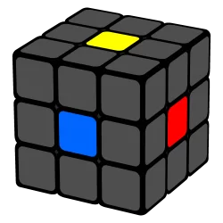
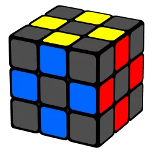
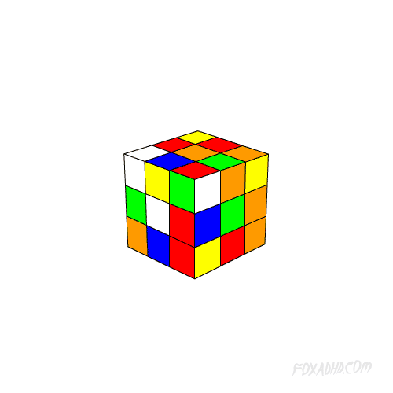
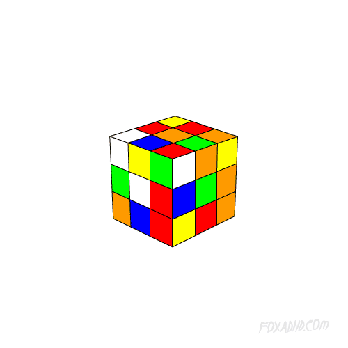

O cubo mágico, também conhecido como cubo de Rubik, é um quebra-cabeça fascinante que desafia a mente e a destreza manual. Criado pelo arquiteto e professor húngaro Ernő Rubik na década de 1970, este intrigante puzzle tridimensional se tornou um ícone da cultura pop e um desafio amado por entusiastas de todas as idades ao redor do mundo.
Esta complexa estrutura composta por pequenos cubos coloridos, dispostos em seis faces, exige uma abordagem estratégica para sua resolução. Desvendar seus segredos não apenas requer lógica e raciocínio espacial, mas também paciência e prática. Os movimentos precisos necessários para restaurar cada face à sua cor original transformam o cubo mágico em uma jornada de descoberta e superação pessoal.
A história por trás deste quebra-cabeça é igualmente cativante. Concebido originalmente como uma ferramenta de ensino para explicar conceitos matemáticos complexos, o cubo de Rubik rapidamente cativou a imaginação de pessoas em todo o mundo. Seus primeiros anos foram marcados por um frenesi global, com milhões tentando desvendar seus mistérios.
Além disso, este intrigante cubo esconde curiosidades fascinantes, como o fato de existirem mais de 43 quintilhões de combinações possíveis, desafiando até mesmo os mais ávidos solucionadores. A popularidade do cubo mágico também é evidente em eventos e competições que atraem participantes habilidosos de todas as partes do planeta. Esses encontros não apenas celebram a habilidade e destreza, mas também a comunidade apaixonada que se forma em torno deste enigma desafiador.
COMO RESOLVER O CUBO MÁGICO MÉTODO BÁSICO - CAMADAS
Introdução
No método básico, também conhecido como método de camadas, resolvemos o cubo mágico em 7 passos, mas antes de começarmos, precisamos entender algumas coisas importantes sobre o cubo mágico.
O cubo mágico possui 3 tipos de peças diferentes, sendo elas:
- 
CENTRO - 
MEIO 
CANTO
A peça mais importante do cubo é a de centro, pois se girarmos todas as camadas que estão ao seu lado, percebemos que ela não sai do lugar. Isso significa que, a cor da peça de centro é a que define a cor da face. Então, se um centro tem a cor verde, a face terá que ser verde.

Passo 1 - Cruz Branca
O primeiro passo para se resolver o cubo mágico é fazer uma cruz em uma das faces, no caso faremos na cor branca, você pode fazer em qualquer cor, mas recomendamos que também comece pelo branco, para que fique mais fácil de entender com as mesmas cores. Se quiser seguir com outra cor, só adaptar para o padrão de cores mostrado na introdução.
A cruz ficará dessa forma:

Para facilitar, vamos reduzir essa passo em duas etapas. Na primeira, vamos fazer a cruz branca em volta do centro amarelo (sem nós preocuparmos com as cores das laterais) como na figura abaixo, essa parte será chamada de “etapa Margarida”. Já na segunda, transformaremos ela na cruz branca final.

Não existe um segredo para fazer essa parte, recomendo que primeiro você tente fazer a Margarida sozinho, para entender como o cubo mágico funciona.
SEGUNDA ETAPA:
Nessa segunda parte pegaremos uma peça, juntaremos com a cor de meio correspondente e faremos um giro duplo para levar a peça de meio branca para baixo, olhe no exemplo:

Nesse caso escolhi a peça de meio Branco e Vermelho, vou girando a camada de cima até essa peça encontrar o Centro de mesma cor (No caso encontrar o centro vermelho). Exemplo da imagem: Movimento U 
Vamos focar exclusivamente nessa peça, ignore todas as outras por enquanto, mesmo que elas também estejam na posição correta. 
Agora farei um movimento duplo nessa camada levando a peça que tem Branco para a camada de baixo. Exemplo da Imagem: Movimento F2 
Pronto, se olharmos agora para nosso centro branco vemos a nossa cruz final começando a se formar
Você seguirá essa última etapa até não sobrar mais nenhum meio branco na camada de cima. Quanto terminarmos todas as peças teremos nossa cruz pronta.
Existe a possibilidade de você fazer a cruz branca direto sem passar pela etapa da “margarida”, depois de praticar um pouco você até pode tentar, mas a coisa mais importante que precisamos prestar atenção aqui é que as cores de meio devem estar ligadas com as cores de centro como mostrado nas imagens ao lado.

ERRADO -

CORRETO
Passo 2 - Primeira Camada
No segundo passo vamos completar toda a face branca, como já fizemos a cruz branca, agora colocaremos os cantos brancos (peça de 3 cores)
Exemplo da etapa pronta:

Para começamos esse passo vamos deixar a nossa cruz branca já pronta apontada para baixo, precisamos prestar muita atenção nesse detalhe, a cruz branca não pode sair da nossa base.
1 - IDENTIFICAR AS QUINAS BRANCAS

Quina branca na camada superior com a cor branca para a direita ou esquerda. 
Quina branca na camada superior com a cor branca para cima. 
Quina branca na camada inferior com diferentes orientações.
2 - POSICIONAR E ENCAIXAR A QUINA BRANCA
- Identificação:Encontre uma quina branca na camada superior com a cor branca apontando para uma lateral.
- Ajuste:Gire a camada superior ou inferior para alinhar a cor adjacente à cor central correspondente.
- Posicionamento:Coloque a quina na posição correta, com a cor branca apontando para baixo.
- Algoritmo:
Lado esquerdo: 


Em notação: U' L' U L Lado direito: 


Em notação: U R U' R'
- Continuação:Repita os passos até concluir a face branca.
Exemplo:


Passo 3 - Segunda Camada
No terceiro passo vamos completar a segunda camada do cubo.
Exemplo da etapa pronta:

A primeira coisa que vamos fazer é procurar na camada de cima uma peça de meio (peça de 2 cores) que não tenha amarelo, sendo que não pode ter amarelo na lateral da peça e nem no topo.


Depois de encontrar a peça vamos olhar para a cor que está virada para frente e girar a camada do topo (ou as duas de baixo) até ela encontrar o centro da mesma cor.
Em casos muito raros pode acontecer de não ter nenhuma peça sem amarelo, se isso acontecer no final desse passo explicamos o que fazer.

Em seguida, iremos determinar o lado de encaixe
- Olhe para a cor do topo da peça para identificar o lado de encaixe.
- Verifique qual lado possui a face correspondente à cor do topo da peça.
Exemplo:


Agora iremos aplicar a sequência de movimentos:
- Lado esquedo:U'L'U L U F U'F'
- Lado direito:U R U' R'U'F'U F
Você fará essa sequência até tirar todas as peças que não tem amarelo da camada de cima.
Pode acontecer de você ter terminado e a camada ainda estar completa.


Passo 4 - Cruz Amarela
No quarto passo vamos fazer na camada de cima, a cruz amarela (pois começamos a montar pela cor branca, e o amarelo é a cor oposta).
Exemplo da etapa pronta:

Nesse caso a formação da cruz se divide em 4 etapas diferentes, sendo a quarta a cruz montada. Vamos seguir uma única sequência para qualquer uma das etapas, a diferença será a orientação de onde se deve aplicar o algoritmo.
Quando você termina o passo 3 pode cair em qualquer uma das etapas abaixo, até mesmo já cair com a cruz pronta (o que é mais difícil, mas pode acontecer).
Lembrando que nesse passo só estamos analisando as peças de meio amarelo, se tiver cantos amarelos na camada de cima você deve ignora-los por enquanto.
-

CASO "PONTO" Nesse caso temos apenas o centro amarelo no topo.
Pode aplicar a sequência de movimentos em qualquer lado que o resultado será o mesmo.
Após fazer a aplicação ele se transformará no CASO “L”

CASO "L" Nesse caso temos dois meios amarelos no topo, que parece formar a letra L.
Aplicar a sequência com o L invertido (uma ponta para a esquerda e outra para trás) como mostrado na figura.
Após fazer a aplicação ele te levará ao CASO “LINHA RETA”

CASO "LINHA RETA" Nesse caso temos novamente dois meios amarelos no topo, mas dessa vez em linha reta.
Aplicar a sequência com a linha na horizontal (uma ponta na esquerda e outra na direita) como mostrado na figura.
Após fazer a aplicação ele te levará ao CASO “CRUZ”

CASO "CRUZ" Se seu cubo está assim o passo 4 foi concluído, pode seguir para o passo 5.
ATENÇÃO: Nesse passo não tem como ficar 1 ou 3 meios amarelos na camada de cima, se seu cubo estiver assim é porque tem alguma coisa errada nele, verifique se completou o passo 3 corretamente, se sim então veja a página CASOS IMPOSSÍVEIS para descobrir como resolver.
Agora identifique qual caso você está e aplique a sequência de movimentos abaixo, nesse exemplo fizemos no CASO “LINHA RETA” que já completa a cruz.


Em notação: F R U R' U' F'
Passo 5 - Face Amarela
Nesse passo vamos orientar todos os cantos amarelos finalizando a face amarela.
Exemplo da etapa concluída:

Nesse passo existem 7 formas diferentes (que dividiremos em 3 partes) de como pode ficar o topo amarelo, mas usaremos apenas uma fórmula para qualquer um dos casos, a diferença será a quantidade de vezes e a orientação que vamos aplicar, como fizemos no passo anterior. Como foi falado no último passo, aqui também existe a chance (bem baixa) de você chegar na etapa e ela já estar concluída, se isso acontecer é só seguir para o próximo passo (A mesma coisa pode acontecer nos passos seguintes).
Abaixo vou mostrar todas as formas, mas antes vou dar uma explicação para que fique mais fácil de entender. Nós vamos olhar quantas quinas amarelas já estão na viradas para cima, podem ser zero, 1 ou 2 peças (nunca com 3, caso tenha essa quantidade veja se todas as outras camadas estão corretas, se sim, veja a página de casos impossíveis para resolver). A forma ideal para completar a face amarela é quando só tem 1 quina amarela virada para cima. Quando se tem zero ou 2, fazemos a sequência para transformá-la em 1. Em qualquer um dos casos vamos aplicar a mesma sequência de movimentos, só mudará a orientação.
Para seguir a orientação vamos sempre nós basear na peça superior esquerda/frente/topo (mostrado nas imagens abaixo). Só ir girando a camada de cima até encontrar a posição informada.
Vamos aplicar uma sequência de movimentos que chamamos no mundo do cubo mágico de “Sune“


SUNE


Em notação: R U R' U R U2(U+U ou U'+U') R'
Passo 6 - Permutação dos Cantos
Nessa etapa vamos permutar os 4 cantos da última camada.
Exemplo da etapa concluída:


DICA: Essa é a sequência de movimentos mais longa que vamos aprender, então preste bastante atenção em todos os movimentos, principalmente nos movimentos B e B’ e nos movimentos duplos, onde é fácil de confundir a orientação correta.


Por fim você alinha a última camada com as faces correspondentes fazendo U, U' ou U2.
Em notação: R B' R F2 (F+F ou F'+F') R' B R F2 R2 (R+R OU R' + R')
Passo 7 - Permutação dos Meios
Nessa etapa vamos permutar os meios restantes da última camada, completando o cubo mágico.

A primeira coisa que faremos nesse passo e encontrar uma face que esteja completa, para podermos aplicar a fórmula. As outras faces vão estar com os meios incorretos. Pode acontecer de não ter nenhuma face completa, nessa caso você aplica qualquer uma das fórmulas mostradas abaixo que com certeza uma face ficará correta.
Se no seu cubo tiver duas camadas corretas e dois meios errados olhe a página de casos impossíveis.


DICA: Nessa etapa vamos fazer um movimento totalmente novo, onde mexeremos a camada do meio, preste bastante atenção para não se confundir e bagunçar o cubo. Uma dica para mexer essa camada é segurar com os dedos as camadas laterais e com um dedo girar o meio.

EXEMPLO 
MOVIMENTO M 
MOVIMENTO M'
Agora vamos identificar qual a orientação das peças, olhe para as peças de meio e veja para onde ela deve ir. Descobrindo a orientação aplicamos a fórmula que é conhecida no mundo do cubo mágico como “minerva”.

SENTIDO HORÁRIO 
SENTIDO ANTI-HORÁRIO
SENTIDO HORÁRIO


Em notação: F2 (F+F ou F'+F') U M' U2 (U+U ou U'+U') M U F2
SENTIDO ANTI-HORÁRIO


Em notação: F2 U' M' U2 M U' F2
 

PARABÉNS!!!
Você resolveu o cubo mágico! Agora é só continuar praticando, reveja todos os passos e aprenda as fórmulas para resolver sem apoio. Logo você já estará resolvendo em poucos segundos.